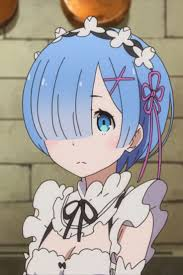

Re:Zero − Starting Life in Another World
Released: April 4, 2016
Genre: Isekai, Drama, Fantasy, Psychological
Re:Zero follows Subaru Natsuki, who is mysteriously transported to another world. With no powers other than the ability to return from death, he becomes entangled in a dark and complex fate as he tries to protect the people he grows to care about.
The series explores themes of despair, determination, and redemption as Subaru faces death repeatedly to alter fate and uncover the truth behind the world he's trapped in.
Cast
Subaru
Voice: Yusuke Kobayashi
Emilia
Voice: Rie Takahashi

Rem
Voice: Inori Minase
Ram
Voice: Rie Murakawa
To watch Full Anime: Re Zero